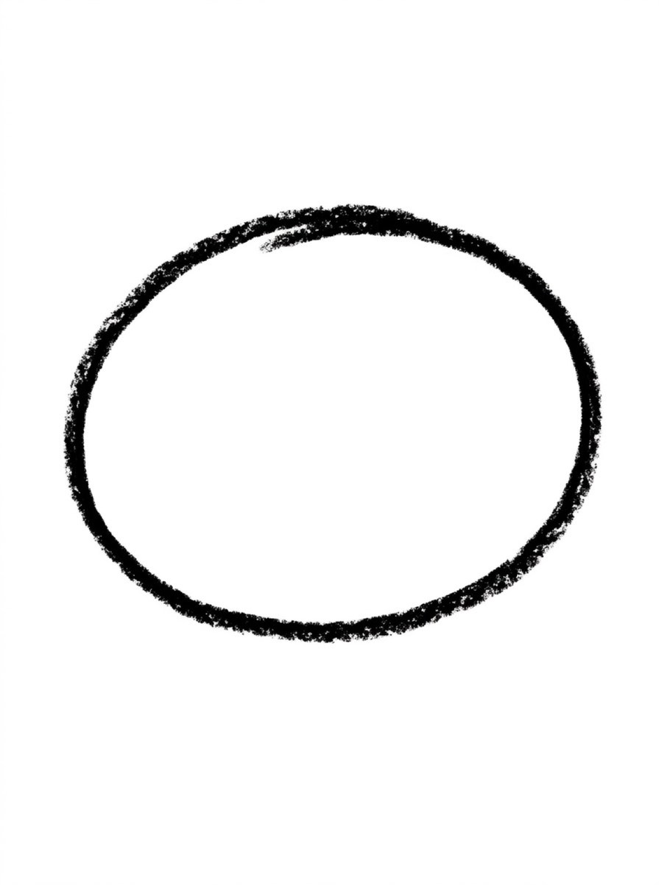
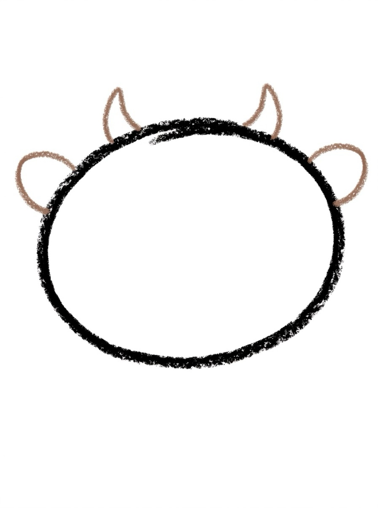
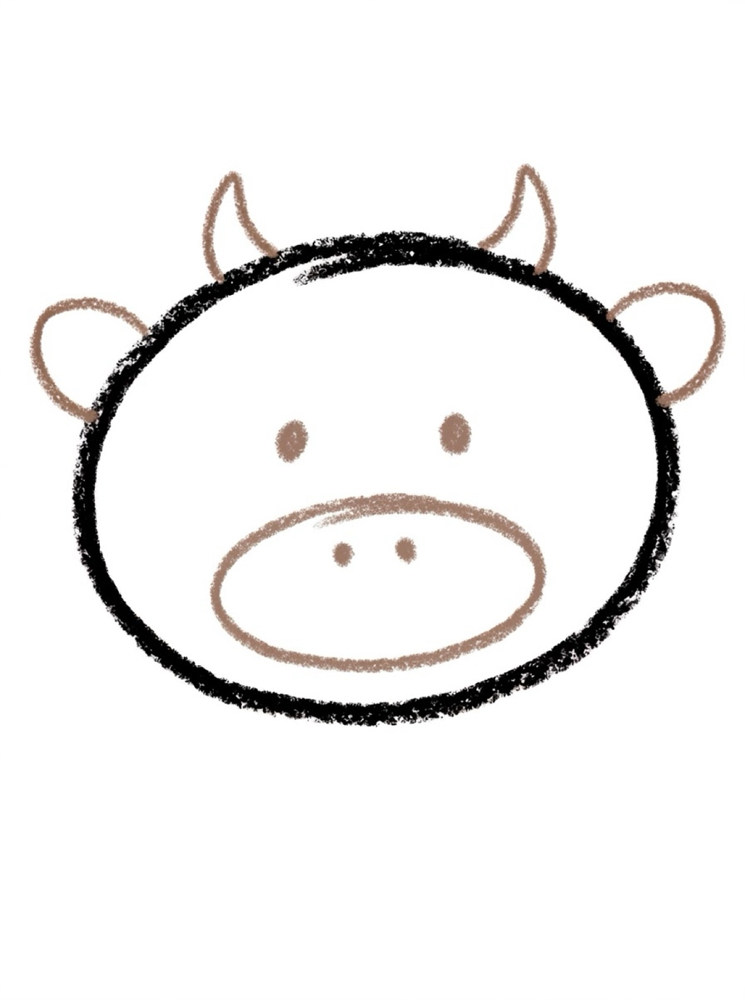
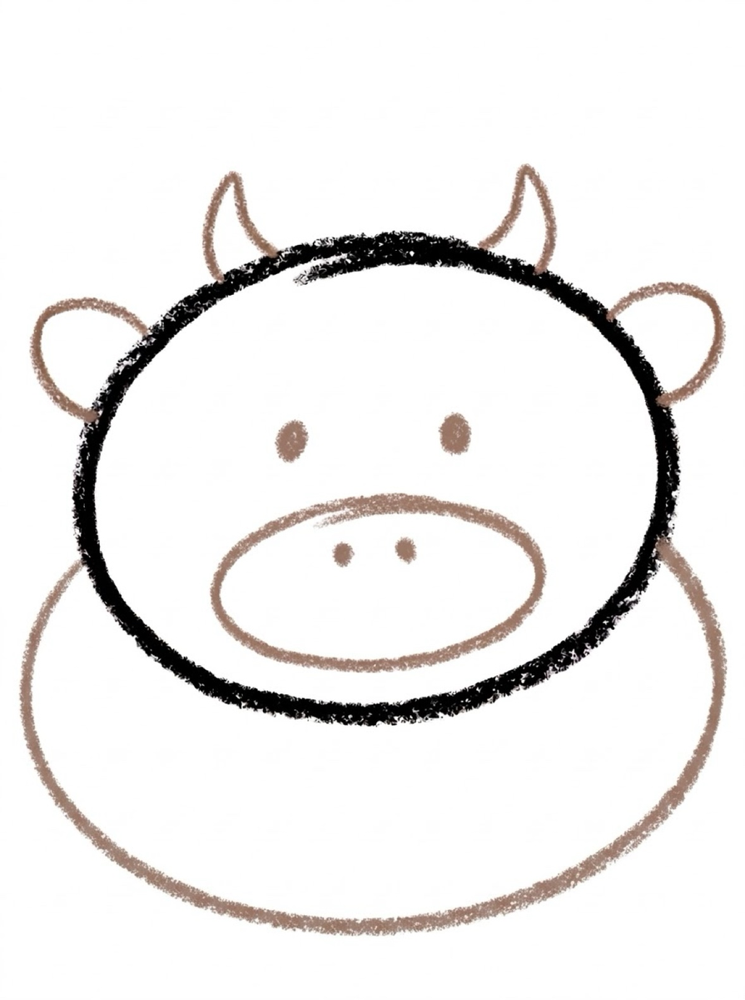
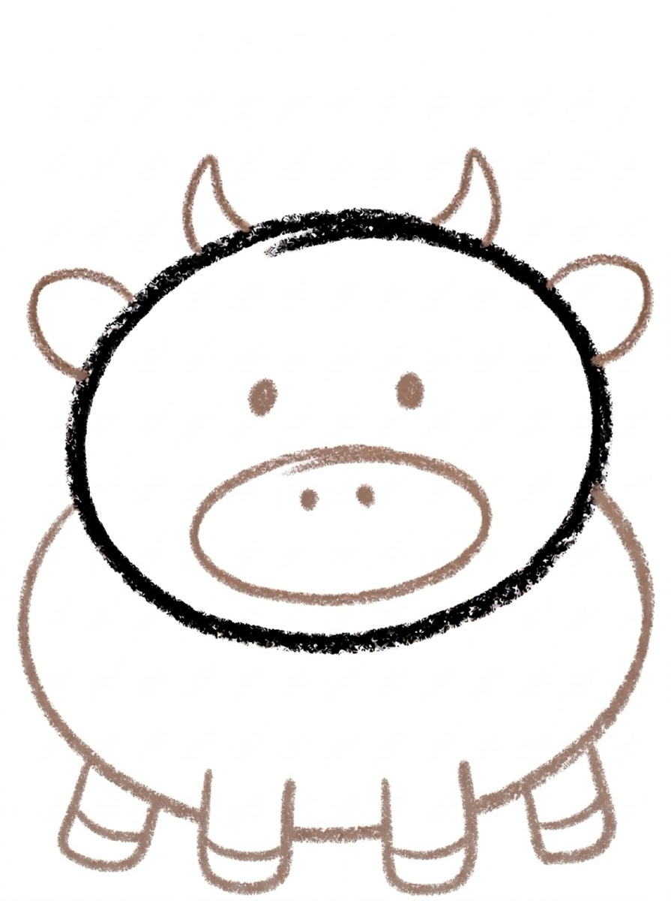
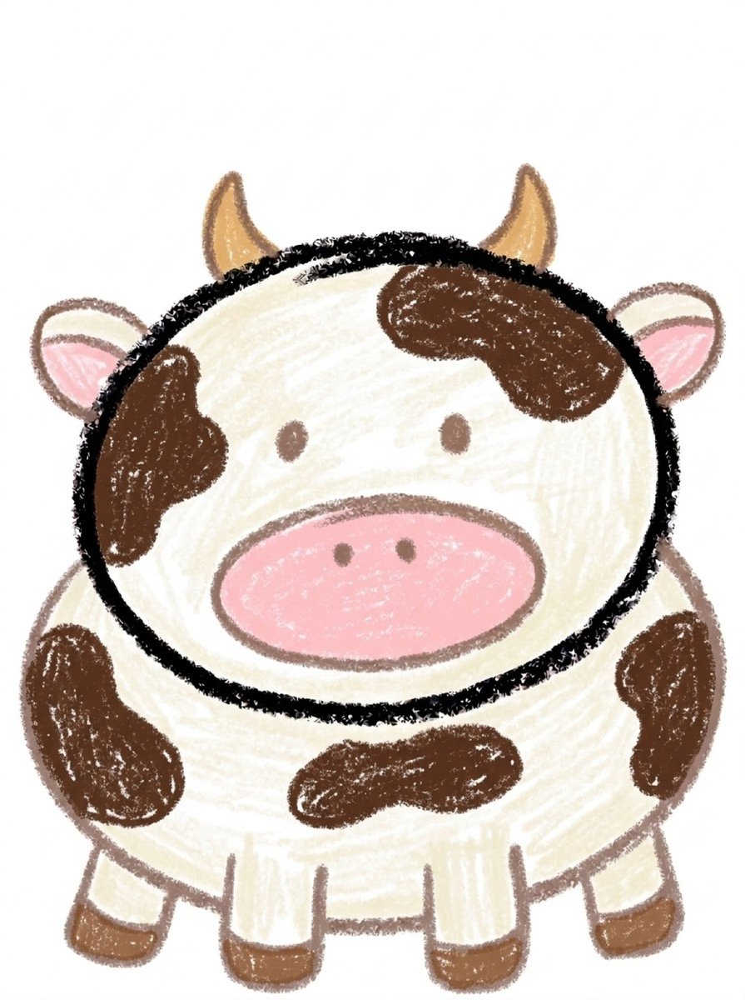

Cow Drawing for Kids How to Draw a Cow in 6 Easy Steps
Quick Answer
This free step-by-step tutorial shows kids how to draw a cow in six easy steps: an oval head, ears with horns, a friendly face, an oval body, four legs, and spots. Download the printable PDF, grab crayons, and follow along together. Made for ages 4 and up — no signup needed, just print and draw.
At a Glance
- Subject: How to draw a cow
- Ages: 3+
- Steps: 6 steps
- Time: ~15 min
- Difficulty: Easy
- Supplies: Paper, crayons
Cows are the patchwork quilts of the barnyard — ovals, spots, and a face that always looks mildly surprised. The spots are pure creative freedom: no two cows (and no two drawings) ever match.
✏️ How to Draw a Cow: Step by Step
One step per box — draw each new part in a different color so kids can see exactly what changed.
Step 1: The Head

Draw a big wide oval for the cow's head.
Step 2: Ears and Horns

Draw two rounded ears on the sides and two small horns on top.
Step 3: The Friendly Face

Add two dot eyes, a big oval snout at the bottom of the face, and two nostril dots.
Step 4: The Body

Draw a big horizontal oval behind and below the head for the body.
Step 5: The Legs

Add four sturdy legs under the body — rounded like thick tubes — with little curved hoof lines at the bottom.
Step 6: Spots and Color

Draw big blobby spots on the body and head, then color — classic black and white, or brown!
📊 Cow Drawing by Age
Every age can join in — just adjust the job.
| Age | What they can do | Tip |
|---|---|---|
| 3–4 | Trace the head oval and dot the spots | Spots are just blobs — the perfect shape for this age |
| 4–5 | Draw the head, body, and legs with help | Big ovals are forgiving shapes for wobbly hands |
| 6+ | Draw the whole cow solo | Challenge: draw the cow in a field with a red barn behind it |
🖨️ Download Your Free Cow Drawing Printable
The printable lays out all 6 steps one per box, big enough for little hands — kids draw right alongside each step.
⬇️ Open Free Printable 🖨️ Print🎁 Free printable for ages 3+
🐄 Barnyard Friends Row
Draw your cow next to a simple barn (square + triangle roof) and add a sun. Then draw the whole scene again but change the spots — stripes? stars? Kids discover that the 'rules' of a cow drawing are just suggestions, and the second version is always wilder than the first.
What You'll Need to Draw a Cow
Black for the spots, pink for the nose and inner ears, white for the body (leave it uncolored). The spots are the fun part — no two should be the same shape, which takes pressure off perfectionists. Brown is an alternative body color for a brown cow. White paper is essential since the body stays white.
What They're Learning
Cow spots are wonderfully forgiving — they're irregular blobs, so there's no wrong way to draw them. That's liberating for kids who stress about precision. The big oval body sits behind and below the head, which teaches simple layering — one shape in front of another. The horns, ears, and snout add new vocabulary alongside the drawing.
Make It Yours
Try a Highland cow with shaggy bangs covering the eyes — hilarious and easy (just zigzag fringe). Draw it in a pasture with grass, flowers, and a barn in the background. A calf next to its mama, or a cow jumping over the moon for the nursery rhyme. Spots can also become hearts or stars for a silly version.
🛒 Our Favorite Drawing Supplies
These are the supplies we reach for in our own home — washable (because kids), quality paper, and enough colors to avoid fights.
As an Amazon Associate, MomYouNeedThis earns from qualifying purchases — at no extra cost to you.
🐮 Cows in the Real World
Cows spend their days doing two things: eating grass, and chewing it again. A cow's stomach has four sections, and food makes the whole tour — that second round of chewing, called chewing the cud, is why a resting cow's jaw never seems to stop moving. It looks lazy; it is actually an all-day job of turning grass into milk and muscle.
Every cow wears a one-of-a-kind pattern: no two spotted cows match, and farmers can tell their animals apart at a glance. Cows also have best friends — studies of herds show cows prefer grazing and resting beside a favorite companion, and get restless when separated. Ask your child who their cow's best friend in the field is. The farm collection grows with how to draw a sheep for the meadow and how to draw a duck for the pond.
❓ Cow Drawing FAQs
What is the easiest way for a kid to draw a cow?
Draw a big wide oval for the head with ears and little horns, then a big horizontal oval for the body with four sturdy legs. Add dot eyes, an oval snout, and big blobby spots. Ovals and blobs — that's a cow.
What age can kids start learning to draw a cow?
Most kids can draw the ovals and blob spots around age 4 with help, and the full cow solo by 5 or 6. Ovals are forgiving shapes for young artists.
What supplies do we need to draw a cow?
Paper and crayons or markers — black and white for the classic look, or brown for a different breed. The free printable PDF lays out all six steps one per box so kids can draw right alongside each step.
Is the cow drawing printable really free?
Yes — every printable on MomYouNeedThis is 100% free to download and print. No signup, no payment, just tap the download button.
How do I print the cow drawing tutorial?
Open the PDF and print at 100% scale (not 'fit to page') so the drawing boxes stay big enough for little hands. The printable is designed to stay large — never shrunk to force a fit.
What is the easiest way for how to draw a cow?
Big shapes and very little detail. The spots do the heavy lifting — a spotted, wide-bodied animal with a broad snout reads as 'cow' instantly, even before the ears and horns go on. Start with the body, and let the pattern finish the job.
📚 Keep Exploring
- ✏️ All 76 Drawing Tutorials 76 free step-by-step drawing tutorials for kids.
- 🐾 Animal Coloring Free printable animal coloring pages for little learners.
- ✏️ Drawing Practice Free printable drawing pre-writing worksheet for toddlers.